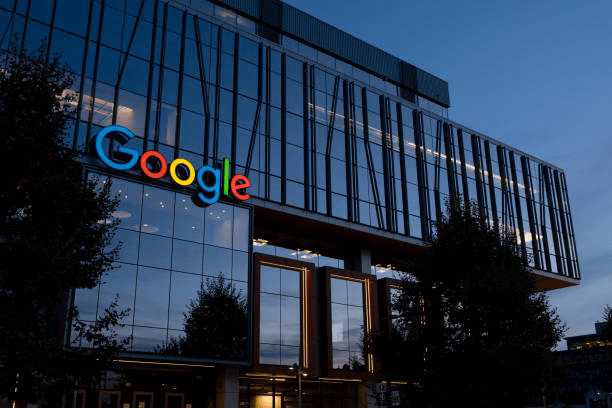

Google Company(STICKY)

One of the creators of Sun Microsystems, Andy Bechelshim, provided the initial funding for Google. It received this financing when Google had no market presence and was not making any money. After understanding its success, three other "Angel Investors" requested funding. These three angel investors were David Cheriton, a physics professor at Stanford University, Ram Sriram, an entrepreneur, and Jeff Bezos, the creator of Amazon.com. Google got $25 million in funding on July 7, 1999, after these investments in late 1998 and early 1999. In this fundraising, there were several investors. The venture capital firm Kleiner Perkins Cofield & Byers and (Sequoia Capita) Sequoia Capita were two of these significant investors.
The data centre is the term used to describe the space formed.
Assessing the company's overall number of data centres in such a case is exceedingly challenging because it has grown significantly. The architecture at the Google data centre now includes various servers. These include user-associated web servers, data collection servers in the form of web spiders, spelling servers, index servers, and a separate ad server for adverts. Only a tiny minority of Google employees are aware of these data centres. Google, however, consistently provides information on the security of its users. You must now know the location of Google's data centres and their general purpose.
One of the creators of Sun Microsystems,(ABSOLUTE)
Andy Bechelshim, provided the initial funding for Google. It received this financing when Google had no market presence and was not making any money. After understanding its success, three other "Angel Investors" requested funding. These three angel investors were David Cheriton, a physics professor at Stanford University, Ram Sriram, an entrepreneur, and Jeff Bezos, the creator of Amazon.com. Google got $25 million in funding on July 7, 1999, after these investments in late 1998 and early 1999. In this fundraising, there were several investors. The venture capital firm Kleiner Perkins Cofield & Byers and (Sequoia Capita) Sequoia Capita were two of these significant investor.